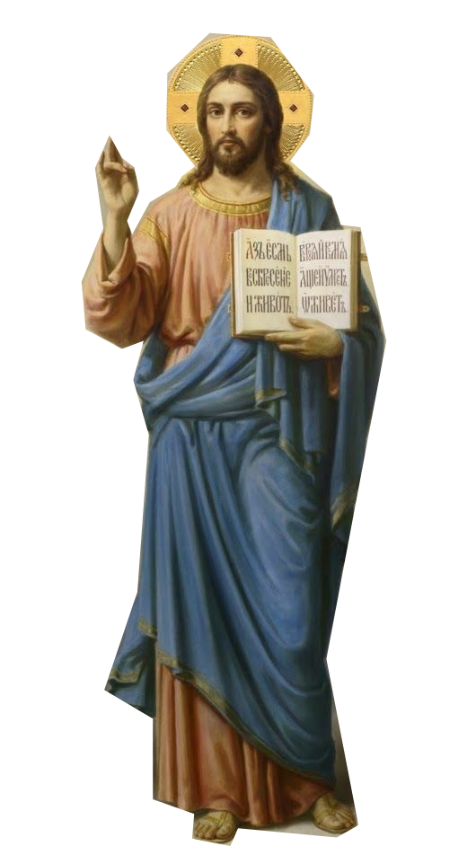
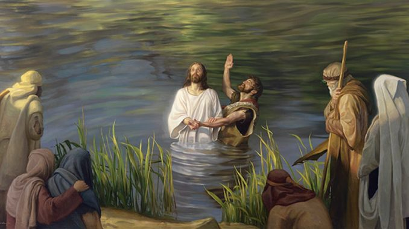
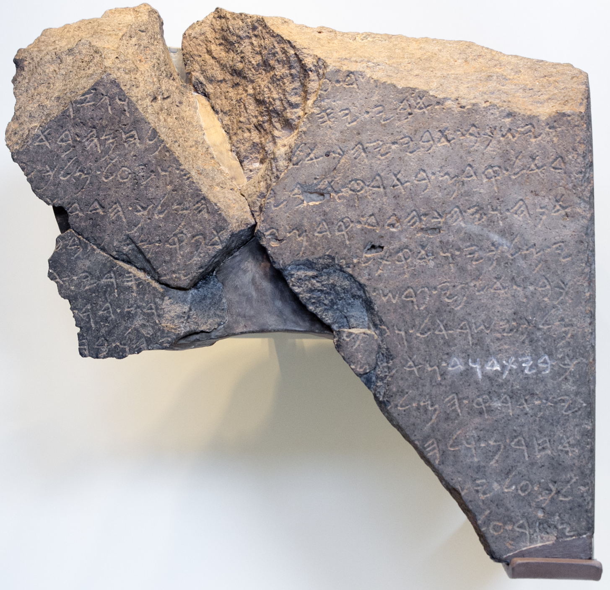
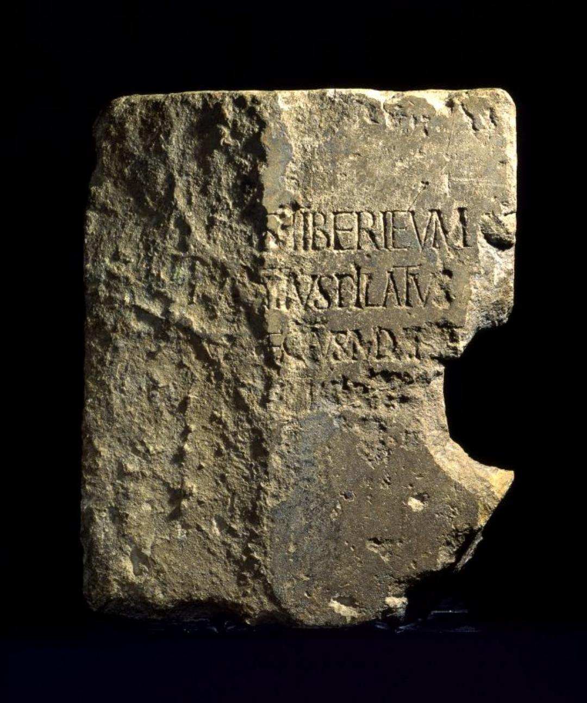
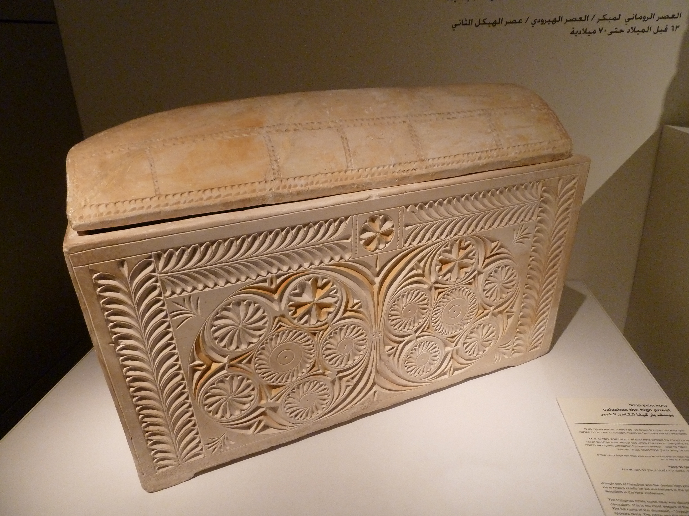
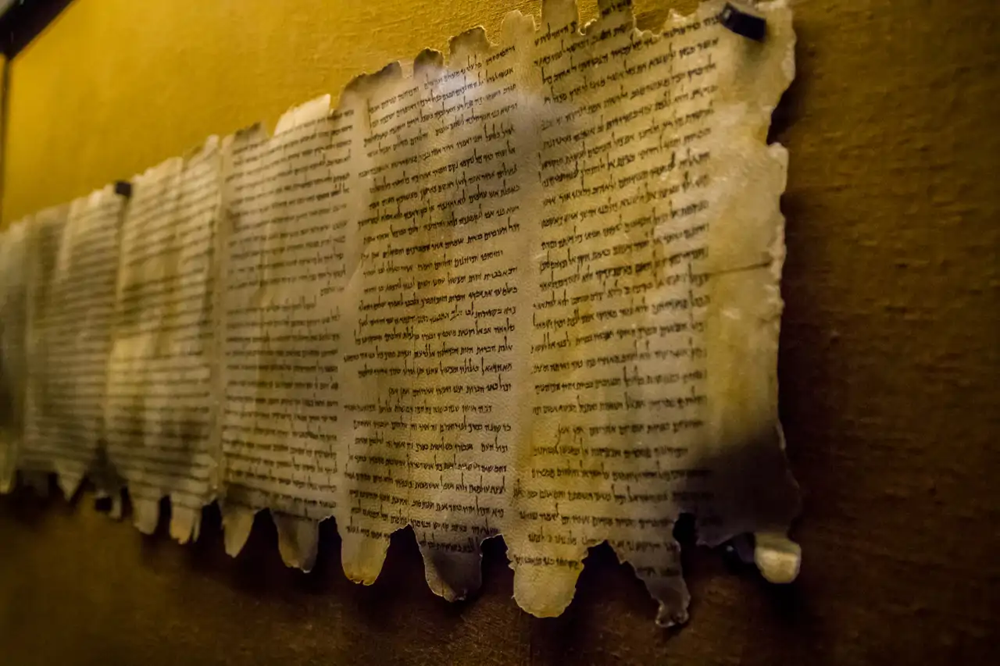

¿Y si la imagen que tienes de Jesús no se parece a quien realmente es?

El bautismo de Jesús en el río Jordán (Mateo 3:13-17).
“En el principio era el Verbo, y el Verbo era con Dios, y el Verbo era Dios.”
Juan 1:1
Jesús es el Hijo de Dios, pero también es Dios mismo: él está en el Padre y el Padre está en él.
Juan lo dice sin rodeos desde la primera línea de su evangelio: el Verbo estaba con Dios y era Dios. Más adelante, el propio Jesús afirmó que él y el Padre son uno (Juan 10:30). Y cuando Felipe le pidió que les mostrara al Padre, le respondió que quien lo ha visto a él ha visto al Padre, porque él está en el Padre y el Padre en él (Juan 14:8-11).
Quienes convivieron con él terminaron reconociéndolo. Tomás, al verlo resucitado, exclamó: «¡Señor mío y Dios mío!» (Juan 20:28). Por eso se le llama Emanuel, que significa «Dios con nosotros» (Mateo 1:23).
Y lo más asombroso es que ese Dios eligió acercarse tanto que el Verbo se hizo carne y habitó entre nosotros (Juan 1:14). Dios no se quedó lejos: se hizo uno de nosotros.
Uno de nosotros
Además de ser el Hijo de Dios, Jesús fue plenamente humano: vivió entre nosotros y como nosotros.
Nació como un bebé, envuelto en pañales y acostado en un pesebre (Lucas 2:7), y creció en estatura y en sabiduría (Lucas 2:52). Sintió hambre después de ayunar (Mateo 4:2), llegó agotado del camino y se sentó junto a un pozo (Juan 4:6), y se quedó dormido en plena tormenta (Marcos 4:38). En la cruz, dijo simplemente: «Tengo sed» (Juan 19:28).
También sintió como sentimos nosotros. Se llenó de alegría (Lucas 10:21). Tuvo compasión al ver a la multitud desamparada y sin pastor (Mateo 9:36). Buscó un lugar apartado cuando supo de la muerte de Juan el Bautista (Mateo 14:13). Y lloró frente a la tumba de su amigo Lázaro (Juan 11:35). Dos palabras, «Jesús lloró», que muestran un corazón como el tuyo.
Por eso la carta a los Hebreos nos dice que él comprende nuestras debilidades, porque fue probado en todo como nosotros, aunque sin pecado (Hebreos 4:15). Cuando te sientas cansado, triste o solo, no le hablas a un Dios lejano, sino a alguien que ya pasó por eso.
Sin condena
Jesús no vino a condenar, sino a salvar: perdona a quien se acerca y lo invita a empezar de nuevo y a hacer el bien.
Una mujer sorprendida en adulterio fue llevada ante Jesús para ser apedreada. Él les dijo a sus acusadores que tirara la primera piedra el que estuviera libre de pecado, y uno por uno se fueron yendo. Entonces le dijo a ella: «Ni yo te condeno; vete, y no peques más» (Juan 8:1-11).
Contó la historia de dos hombres que subieron a orar. Uno, orgulloso, se creía mejor que los demás. El otro, un cobrador de impuestos, ni se atrevía a levantar la vista y solo pidió compasión. Fue ese último quien volvió a su casa perdonado por Dios (Lucas 18:9-14).
A un paralítico que sus amigos bajaron por el techo, lo primero que Jesús le dijo fue que sus pecados estaban perdonados. Después lo sanó y lo mandó a su casa caminando (Marcos 2:1-12). Y ante un centurión romano, un extranjero, se asombró de su fe y dijo que no había hallado una igual en todo Israel (Mateo 8:10). Para Jesús, nadie queda afuera.
Pedro lo había negado tres veces, pero no recibió ningún reproche. Recibió tres veces la misma pregunta, «¿me amas?», y la misión de cuidar a sus ovejas (Juan 21:15-17).
Él mismo lo dejó claro: «Yo no juzgo a nadie» (Juan 8:15). Y Juan lo resume así: Dios no envió a su Hijo al mundo para condenarlo, sino para salvarlo (Juan 3:17). Su perdón no es indiferencia, es una puerta abierta para empezar de nuevo.
Pruebas
Si lo que cuenta la Biblia sucedió de verdad, tiene que haber dejado huellas en la historia. Y las hay.

La Estela de Tel Dan (siglo IX a. C.): una inscripción hallada en el norte de Israel que menciona a la «casa de David», la dinastía del rey David. El Prisma de Senaquerib: un registro del rey de Asiria que cuenta cómo rodeó Jerusalén en tiempos del rey Ezequías, un episodio que también narra la Biblia (2 Reyes 18-19).
El Prisma de Senaquerib: un registro del rey de Asiria que cuenta cómo rodeó Jerusalén en tiempos del rey Ezequías, un episodio que también narra la Biblia (2 Reyes 18-19).
La Piedra de Pilato (Cesarea, 1961): una inscripción romana que nombra a Poncio Pilato como gobernador de Judea, el mismo que condenó a Jesús (Mateo 27).
El osario de Caifás (Jerusalén, 1990): una caja de piedra con el nombre «José, hijo de Caifás», probablemente de la familia del sumo sacerdote que interrogó a Jesús (Mateo 26:57).- La inscripción de Galión (Delfos, Grecia): menciona al gobernador romano ante quien llevaron a Pablo en Corinto (Hechos 18:12) y ayuda a ubicar ese viaje en el tiempo.
- Tácito y Josefo: el historiador romano Tácito escribió que Cristo fue ejecutado bajo Poncio Pilato en el reinado de Tiberio, y el historiador judío Josefo menciona a Santiago, hermano de Jesús, al que llamaban el Cristo.

Los Manuscritos del Mar Muerto (hallados en 1947): copias de libros del Antiguo Testamento con más de 2.000 años, como el rollo de Isaías, que coinciden de forma notable con los textos que leemos hoy.- Más de 5.000 manuscritos griegos del Nuevo Testamento: muchísimos más que los que existen de cualquier otra obra de la antigüedad.
Ven
Jesús no te pide que seas perfecto para acercarte a él. Te dice «ven»: ven cansado, ven con tus dudas, ven tal como eres (Mateo 11:28). Él es el camino, la verdad y la vida (Juan 14:6), y quiere que tengas una vida plena (Juan 10:10).
Seguirlo no es cumplir una lista de reglas ni pertenecer a un edificio. La iglesia no es un lugar ni un grupo de personas perfectas, sino la comunidad de quienes lo siguen y se acompañan en el camino: gente imperfecta, perdonada por él. Donde dos o tres se reúnen en su nombre, él está en medio de ellos (Mateo 18:20).
Y nos dejó un mandamiento que resume todo lo demás: «Ámense unos a otros, como yo los he amado» (Juan 13:34).
La puerta está abierta, y él ya dio el primer paso hacia ti. Ahora te toca a ti: ven y síguelo.